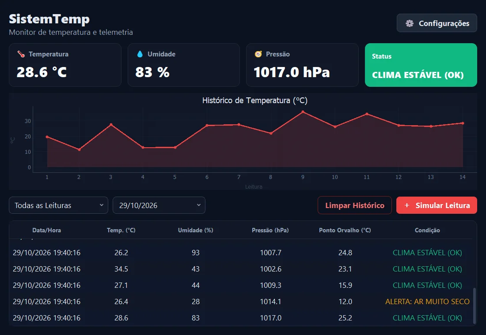
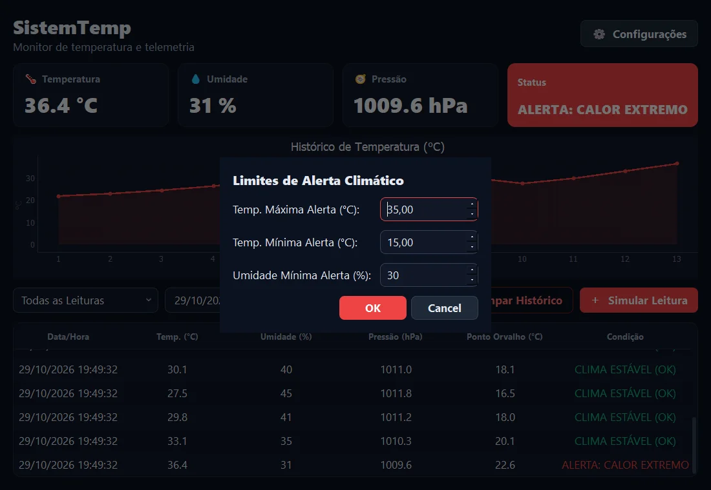
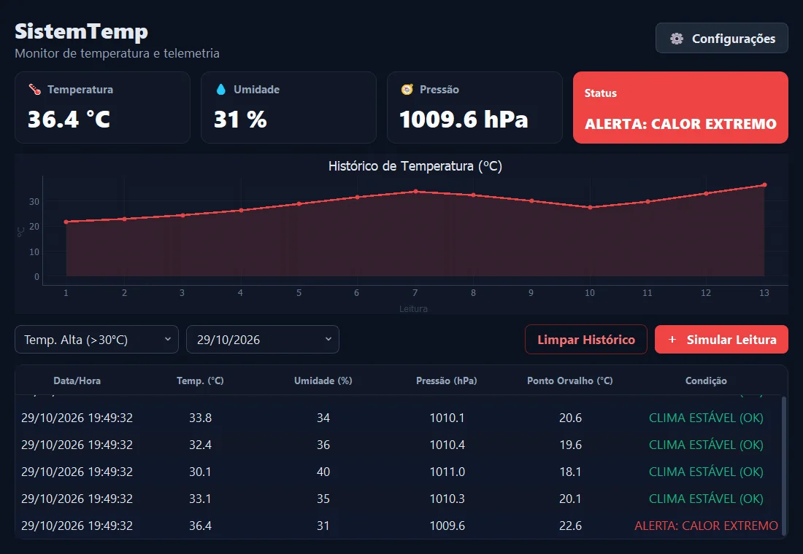

SistemTemp
Monitor climático para desktop: temperatura, umidade, pressão e ponto de orvalho com alertas, gráfico e histórico salvo em SQLite.A desktop weather monitor: temperature, humidity, pressure and dew point with alerts, a chart and a history saved in SQLite.
 0
0

O que fazWhat it does
- Mostra temperatura, umidade e pressão de cada leitura, e calcula o ponto de orvalho.
- Shows the temperature, humidity and pressure of each reading and works out the dew point.
- Card de status que muda de cor: calor extremo, frio intenso, ar muito seco ou clima estável.
- A status card that changes color: extreme heat, intense cold, very dry air or stable weather.
- Gráfico do histórico de temperatura, atualizado a cada leitura.
- A temperature history chart, updated on every reading.
- Histórico salvo em SQLite, com filtro por data e por temperatura alta ou baixa.
- History saved in SQLite, filtered by date and by high or low temperature.
- Limites de alerta configuráveis e um log de tudo que acontece no app.
- Configurable alert limits and a log of everything the app does.
- Interface em modo escuro.
- Dark mode interface.
Como funcionaHow it works
Um app desktop em Python com PyQt5, organizado em MVC: as telas são arquivos .ui do Qt Designer, as regras de alerta e o ponto de orvalho ficam no model, um controller para cada parte da tela (janela, gráfico, histórico e configurações) liga tudo, e o banco é um SQLite local. O gráfico usa pyqtgraph e as leituras são simuladas, prontas para receber dados de um sensor de verdade.A Python desktop app with PyQt5, organized as MVC: the screens are Qt Designer .ui files, the alert rules and dew point live in the model, one controller per part of the screen (window, chart, history and settings) ties it together, and the database is a local SQLite file. The chart uses pyqtgraph, and the readings are simulated, ready to take data from a real sensor.
Como rodarRun it
git clone https://github.com/SamuelSchutz13/SistemTemp.git cd SistemTemp pip install -r requirements.txt python main.py
ImagensImages

